Chapter Two · Section (a): Ayaat on warning against miserliness and hoarding
6. Collection of Ayaat on warning against miserliness and hoarding
Thus far, a few Ayaat of the Holy Qur’an have been mentioned and discussed on the subject of miserliness. Some more are given here; thereafter some Ahadith on the same subject are discussed, in order to bring out how extremely dangerous is the practice of miserliness and amassing of wealth;-
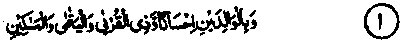
1. And be good to parents and to kindred and to orphans and the needy. (al-Baqarah: 83)
2. And giveth his wealth, for love of Him, to kinsfolk and to orphans and the needy. (al-Baqarah: 177)
3. Say: That which ye spend for good (must go) to parents and near kindred and orphans. (al-Baqarak: 215) 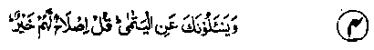
4. And they question thee concerning orphans. Say: to improve their lot is best. (al-Baqarah: 220)
5. Give unto orphans their wealth. (an-Nisaa: 2)
6. And if ye fear that ye will not deal fairly with the orphans, (an-Nisaa: 3) 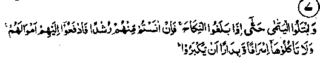
7. Prove orphans till they reach the marriageable age; then, if ye find them of sound judgment, deliver over unto them their fortune; and devour it not by squandering and in haste lest they should grow up. (an-Nisaa: 6)
8. And when kinsfolk and orphans and the needy are present at the division (of the heritage)-(an-Nisaa: 8).
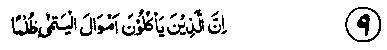
9. Lo! Those who devour the wealth of orphans wrongfully, they do but swallow Are into their bellies, and they will be exposed to burning flame! (an-Nisaa: 10)
10. (Show) kindness unto parents, and unto near kindred, and orphans, and the needy, and unto the neighbour who is of kin (unto you) and the neighbour who is not of kin, and the fellow-traveller and the wayfarer and (the slaves) whom your right hands possess. Lo! Allah loveth not such as are proud and boastful. (an-Nisaa: 36)
11. And the Scripture which hath been recited unto you (giveth decree)', concerning female orphans unto whom ye give not that which is ordained for them though ye desire to marry them, and (concerning) the weak among children, and that ye should deal justly with orphans. Whatever good ye do, Lo! Allah is ever Aware of it. (an-Nisaa: 127)
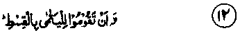
12. ‘And that ye should deal justly with orphans’, (anNisaa: 127). '
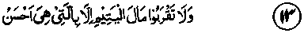
13. And approach not the wealth of the orphan save with that which is better. (al-An'aam:152).
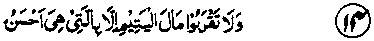
14. And approach not the wealth of the orphan save with that which is better. (Bani-Israel: 34)
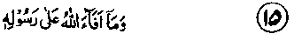
15. That which Allah giveth as spoil unto His Rasul from the people of the townships, it is for Allah and His Rasul and for the near of kin and the orphans and the needy and the wayfarer, that it becomes not a commodity between the rich among you. And whatsoever the Rasul giveth you, take it. And whatsoever he forbiddeth, abstain (from it). And keep your duty to Allah. Lo! Allah is stern in reprisal, (al-Ifashr: 7)
16. And feed with food the needy wretch, the orphan and the prisoner, for love of Him. (ad-Dahr: 8)
17. Nay,, but ye (for your part) honour not the orphan.
(al-Fqjr: 17)
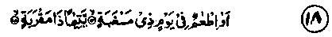
18. And to feed in the day of hunger. And orphan near of kin. (ai-Balad: J4,15)
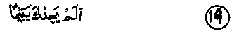
19. Did He not find thee an orphan . (ad-Dhuhaa: 6)
20. Therefore the orphan oppress not. (ad-Dhuhaa: 9)
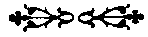
Kutab Khana Faizi Lahore (Pakistan)